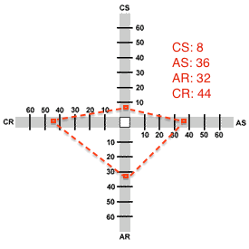

Thinking Style(s)
í
- My VARK learning style is multimodal.
- My thinking style has marked tendencies towards Concrete Random, Abstract Sequential, Abstract Random, and almost no tendency to Concrete Sequential.

To me, this means that my learning process is mostly abstract and random (2x abstract, 2x random, 1x concrete).
Considering
abstract: I guess it is not so important for me to actually see code to understand a programming problem. Maybe I should start drawing my thoughts to further extend my intuition, rather than pondering about certain code examples.
Considering
random: I don't need (and often my brain doesn't want) to learn things in a particular order. That's why I'm having a look at all challenges first, and then decide which one I want to work on. In most cases it's the one that arouses my interest the most. Maybe it's not always good to start with the most interesting one, especially because the motivation for the week's challenge should not start high, then plunge and then retain on a low level, I think.
My Struggles
í
í
I don't I had to struggle at some points because I'm a random thinker. In fact, DBC's challenges are designed so that is fairly easy
not to drive on a linear path - and that's good for me.
What I strived a little more against was this "doing-things-again-and-again-until-it-hurts". It is really a pain for me to be forced to do a thousand repitions, when I already understood the point after the first or second time. That's why I really wasn't that keen doing the
Codecombat - JS - Beginner Campaign.
Growth vs. Fixed Mindset
í
í
From
brainpickings.org:
"A 'growth mindset' thrives on challenge and sees failure not as evidence of unintelligence but as a heartening springboard for growth and for stretching our existing abilities."
And here is my approach for
stretching my abilities:
There's not always the situation that you can apply your thinking style in every joint. For that reason, I should try to get familiar with other learning styles. In my case this is the
Concrete Sequential learning style. According to the
Growth Mindset concept, behaving like a concrete-sequential thinker for some time should extend my abilities.
What does that mean?
Concrete-sequential thinkers register information directly through their five senses. They take things as they are, and don't always try to see if there's a deeper meaning to a learning objective. Also. they organize information in a linear, step-by-step manner.
In my mind, I should try to make
detailed time tables for upcoming learning objectives, for two reasons:
- The structure of a time table forces me to work linearly
- When I make a detailed plan, it forces me to focus on the materials I have - that may change the way how I register information a bit. Usually I'd just draft a rough overview of my plannings, which leads me to thinking beyond the actual material.
Doing this from time to time should extend my ability of using different thinking styles in a sufficient way.